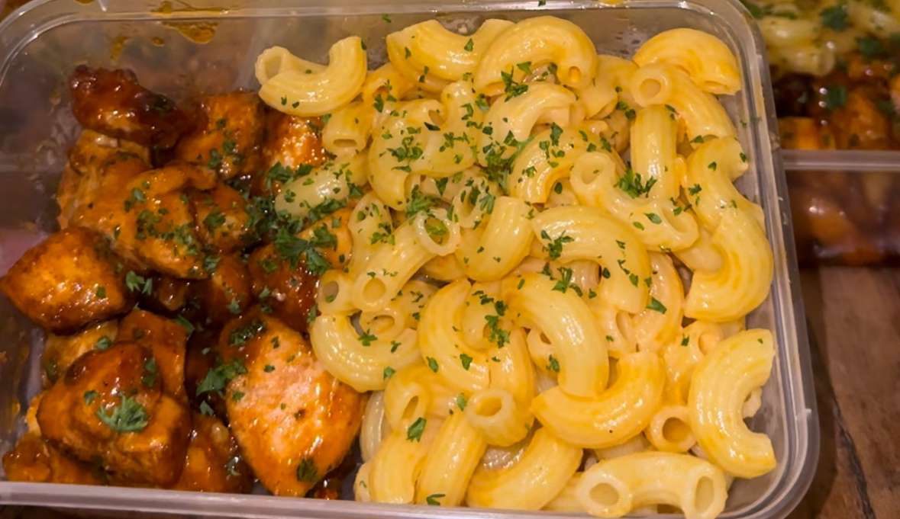

Buffalo Chicken Mac & Cheese
Ingredients
- 600 g Raw Chicken Breast
- 500 g Macaroni Pasta
- 60 g Light Butter
- 180 ml Hot Sauce
- 30 g BBQ Sauce
- 20 g Honey
- 130 ml light cream
- 20 g cheddar cheese
- Garlic powder, onion powder, paprika
- 30 g Cornflour
Instructions
- Cube your chicken breast then season with 1tbsp garlic powder, onion powder, paprika and 30g of corn flour (to make it crispy)
- Air fry chicken for 15 minutes at 180 (or oven bake at 18 minutes at 180)
- On a pan over low heat, add 30g light butter, 100ml hot sauce, 30g BBQ sauce, 20g of honey and then your cooked chicken. Add fresh parsley flakes to garnish.
- Cook macaroni in salted water per packet instructions.
- To a pan over medium heat, add 30g butter, 80ml hot sauce, 130 ml light cream and 20g of cheddar cheese. Stir until melted then add in macaroni then stir again until smoot.
- Distribute chicken and macaroni equally between 5 meal prep containers and enjoy!
Source PDF page 25